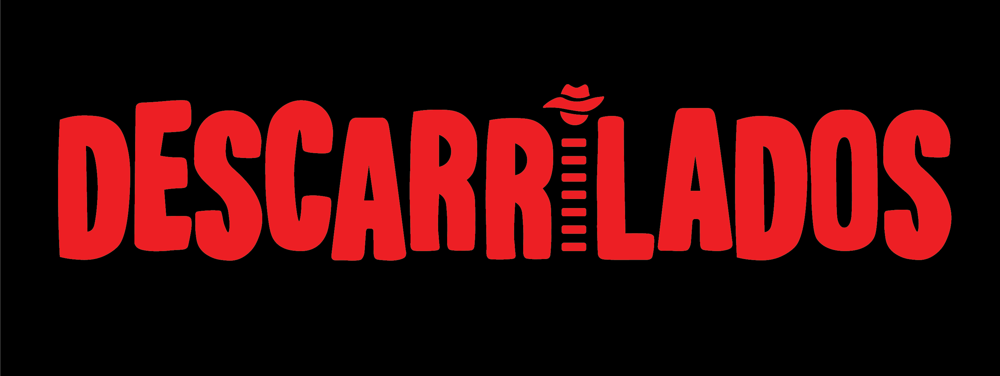

Concept
—
001
Descarrilados: A Historical Animation
Descarrilados, meaning "derailed," is a fantasy grounded in historical reality—a story for us, but a lived experience for those who endured these dark times. This animation serves as both an illustrative and educational work about Portugal's oppressive dictatorship under António de Oliveira Salazar.
The piece reflects on the decades in which Portugal was subjected to this oppressive regime, under which freedom of speech and action were stifled. Through a fantastical lens, we sought to convey the weight of these restrictions and the absurdity of life under authoritarian rule, creating a narrative that is impactful and accessible to new generations.
Tools Used: Blender, Adobe Premiere Pro, Adobe After Effects, Adobe Illustrator, Procreate
Project Duration: University 4th semester 2024


Story
—
002
Short Movie Synopsis
It's a cold November night, and the city lies still. Few people are out, few lights remain—but Salazar's eyes and ears are everywhere, alert for anyone who dares to cross the line, to speak forbidden thoughts.
On this winter night, two friends risk everything. Memories resurface, emotions stir, and a shared longing to break free takes hold. They sit down to play a simple game of cards, but each hand dealt and every word spoken carries weight. In this game, they discover just how dangerous a conversation can be, how it has the power to spark change—and why Salazar fights so hard to silence it. But where can they go now? Is there any place left to hide?
Design
—
003
Concept and Creation of the Sets
I'll introduce the three main environments that set the stage for our story, each carefully crafted to reflect the historical essence of the era we're representing. Modeled entirely in Blender, these spaces capture the details and atmosphere of 1950s Lisbon with precision.
First, there's the Santa Apolónia train station in Lisbon, carefully modeled to embody its 1950s architecture. This is where the journey begins, as the characters board the "Foguete." The vibrant bar and maze provide the contrast into the surreal card world.


Design
—
004
Character Design
The animation features six faceless characters, each designed to represent broader themes. Their lack of faces symbolizes the universality of their roles, helping the audience connect with the story.
The King, Queen, and two men on the train represent the Portuguese people's fight for freedom, while the Jack and the PIDE agents embody the oppressive regime. The final stylized shaders add the animated card look.
Jack of Clubs

 renders/colours_edited.webp)
 renders/jack_shaders_renders.webp)
King of Spades


Queen of Hearts


PIDE Agent


Promotion
—
005
Merch Overview
To promote our video, we created a visually striking A3 poster and an A4 flyer, inspired by the minimalist aesthetic of Saul Bass.
The poster incorporates elements from the animation, with a bold color scheme of red and dark blue. It includes key details like the title, event location (Escola Secundária Marquês de Pombal), date (coming in July), and the producer (Entrelinhas).


Behind The Scenes
—
006
Photo Gallery
Behind the scenes moments and additional imagery from the production process.


Team
—
007
Credits
A collaborative effort by a talented team of students and creators.
Character Sketching — Madalena Velloso & Mariana Anastácio
Environment Sketching — Mariana Anastácio & Madalena Velloso
Concept art — Mariana Anastácio
Trailer — Mariana Anastácio
King of Spades Modelling — Leonor Pinto
Queen of Hearts Modelling — Carolina Figueiredo
Jack of Clubs Modelling — Madalena Velloso
PIDE Modelling — Carolina Figueiredo & Madalena Velloso
Men on the Station Modelling — Mariana Anastácio & Mariana Maciel
Men on the Train Modelling — Mariana Anastácio & Mariana Maciel
Train Station Modelling — Mariana Anastácio
Train Modelling — Mariana Maciel & Mariana Anastácio
Bar Modelling — Madalena Velloso
Maze Modelling — Leonor Pinto
3D Animation — Mariana Anastácio, Carolina Figueiredo, Madalena Velloso, Leonor Pinto & Mariana Maciel
Sound Design — Mariana Maciel & Madalena Velloso
Soundtrack Selection — Mariana Anastácio
Title Design — Mariana Anastácio
Poster Design — Madalena Velloso
Flyer Design — Madalena Velloso
T-shirt Design — Carolina Figueiredo & Mariana Maciel
Flyer & T-shirt Mockups — Carolina Figueiredo
Renders for Project Showcase — Mariana Anastácio
**Creative Tech Students developed a parallel Interactive experience with our 3d Models.**